真打吉宗
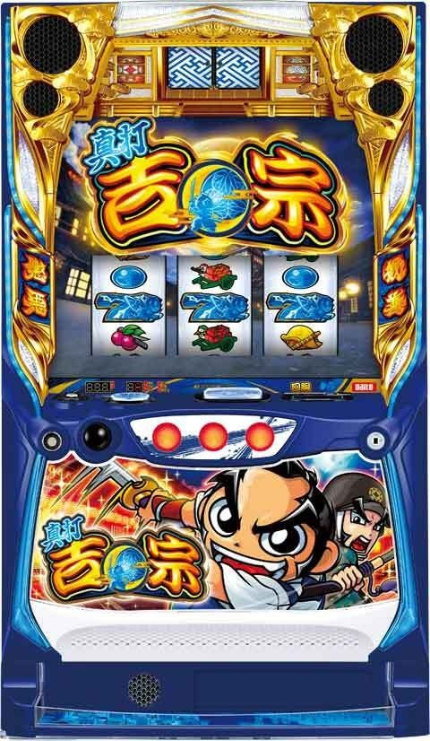
【天井情報】
CZ間1000G＋α消化、または6周期でCZに当選。
AT間1500G＋α消化でATに当選。
朝イチリセット時は1000G＋α、真BB後は700Gに短縮。
【リセット判別】
不明
【有利区間について】
差枚等で有利区間リセット時は「月下ノ花道」を経由して真BIGに突入。
差枚プラス時に「月下ノ花道」突入で有利切断すると思われる。差枚マイナス時は不明。
狙い目
【リセット狙い】
AT間
0スルー 250Gから
1スルー以降 450Gから
【ゲーム数天井狙い】
CZ間
460Gまたは、夜回りカウンター5周期350ptから
AT間
下位AT後
差枚マイナス時 800Gから（CZ間のハマりが浅い想定）
差枚プラス時 900Gから（CZ間のハマりが浅い想定）
上位AT後（真BIGボーナス後）
上位AT終了時差枚+1000枚以上 0スルー 200Gから 1スルー以降350Gから
上位AT終了時差枚+1000枚未満 0スルー0Gから
※真BIGボーナス後は700Gに天井短縮
【夜回りカウンター狙い】
周期カウンターの色
赤 当該周期消化
青 170ptから
ポイント表示の色
どのタイミングで発光するのか不明だが、「緑」と「赤」なら消化
【ゾーン狙い】
0スルー 1周期130ptから1周期抜けまで
【メニュー画面キャラ狙い】
※解析出ていないため暫定です。メニュー画面のキャラは周期ごとに変わる事あり。
白背景 デフォルト
青背景 デフォルトとあまり変わらない？
緑背景 桜＆紅 4周期以内当選？ 3or4周期なら4周期消化まで
緑背景 和入道＆姉御 和入道以上濃厚？ 少しボーダー下げれる？
赤背景 葵＆翠＆桜＆紅 天国濃厚？ CZ当選まで？
赤背景 敵集合 通常C濃厚？または柳生濃厚？ CZかAT当選まで？
【示唆関連の押し引きについて】
御白洲ビジョン
大吉 天国濃厚 CZ当選まで
夜 5回中3回天国 天国確認
夕方 2回以内天国あり 天国確認
極悪人の気配 VS柳生濃厚 CZ当選まで
5人 当該周期CZ濃厚 当該周期消化
4人 2周期以内CZ濃厚 ２周期以内の周期消化
抜刀メーター
9ptから？単体では厳しいかも？
千両箱
虹 AT当選まで？ 赤もAT当選まで？
【有利区間関連狙い】
※差枚がプラスになると冷遇状態になる傾向？直撃しやすくなるが獲得枚数が少なくなる。
※差枚プラス時は各種狙い目のボーダーを少し上げた方が良いかも？
※差枚プラス時に「月下ノ花道」突入で有利切断すると思われる。差枚マイナス時は不明。
差枚+2000枚以上 1周期0ptから1周期抜けまで？
やめ時
AT後 1G回して御白洲ビジョンを確認？続行する要素が無ければやめ？メニュー画面のキャラも要確認
CZ後 AT後同様
その他
データ履歴
17:43 ART45Gの当選履歴が真BIGボーナスの履歴と思われる。
40-50GでART当選履歴が真BIGボーナス履歴？
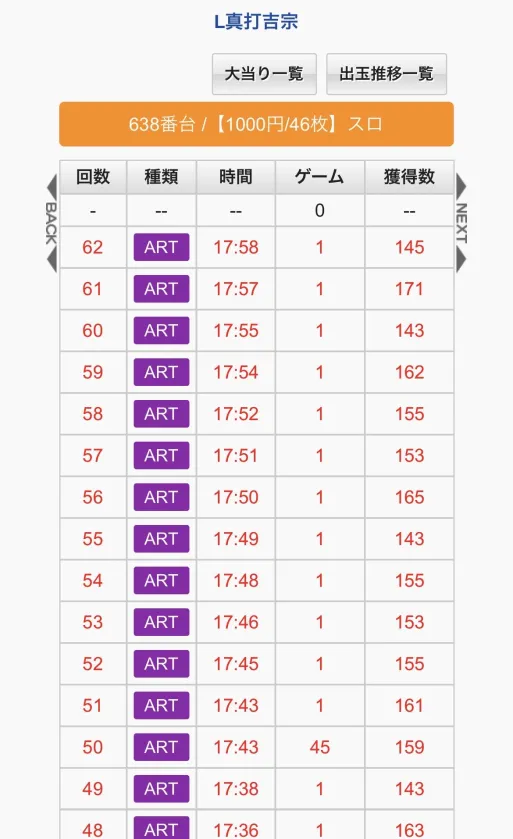
CZモード
※5回先までの示唆は途中AT当選した場合無効かも？？
→途中AT当選しても無効では無さそう？
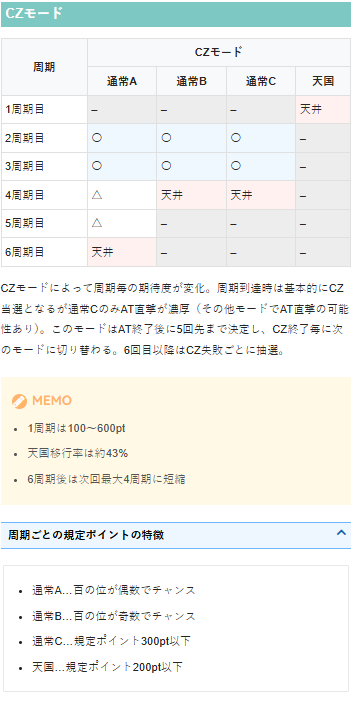
夜回りモード
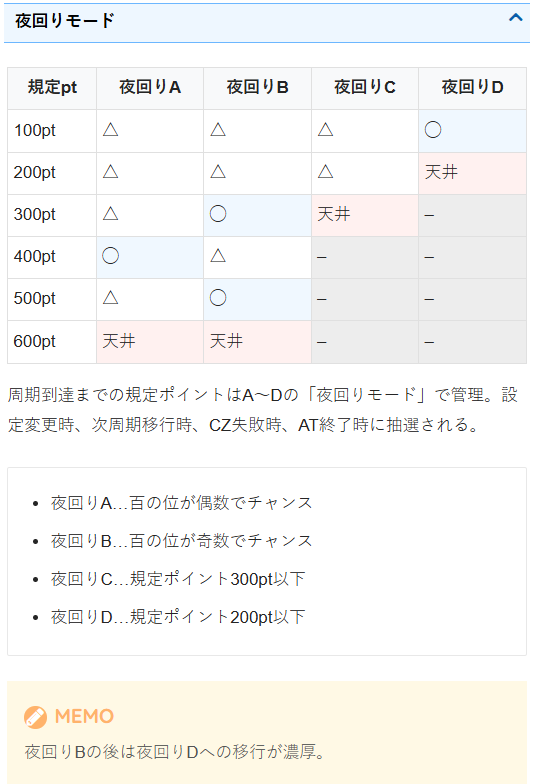
抜刀メーター
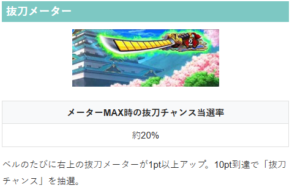
御白洲ビジョン
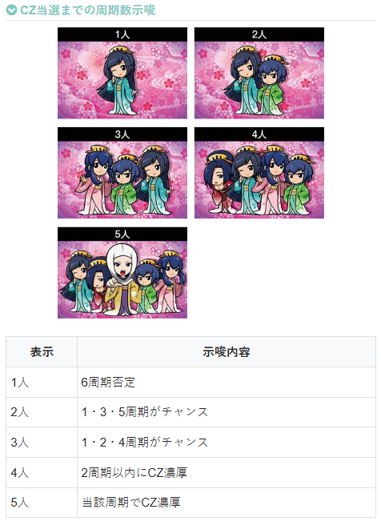
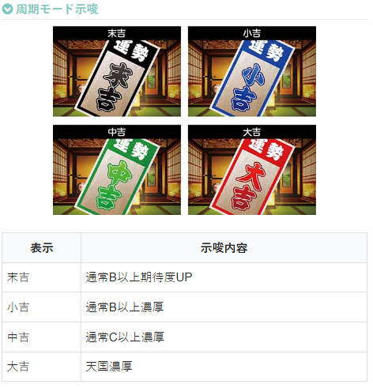
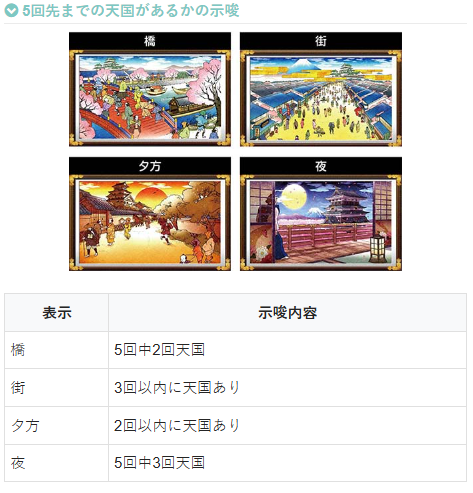
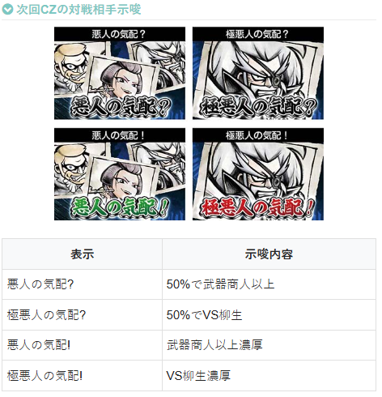
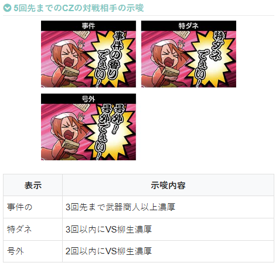
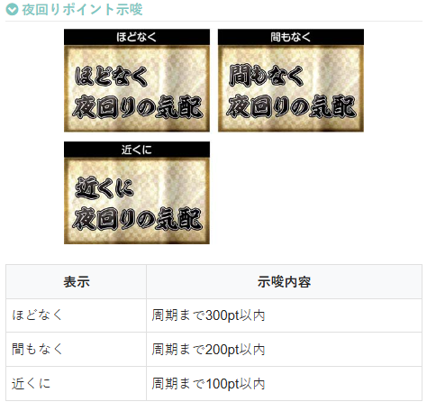
メニュー画面のキャラ
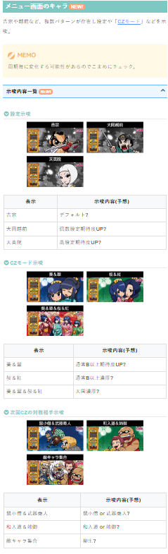
周期数とポイントの色
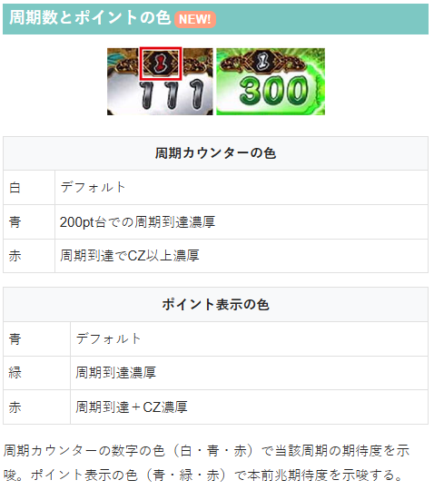
奉行所スタート
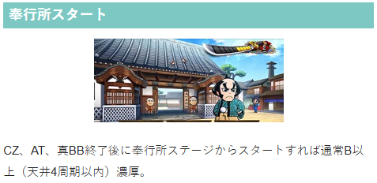
千両箱
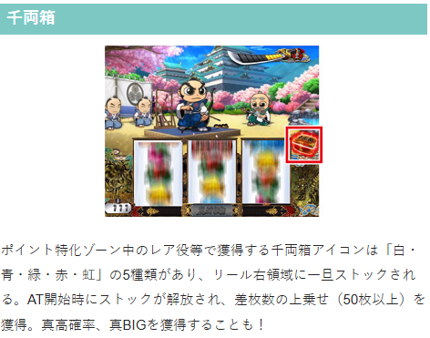
内部状態・ステージ
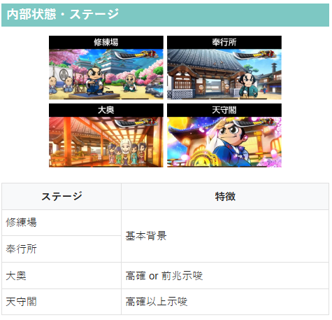
参考元
基本情報
- メーカー: 大都技研
- 機械割: 97.8% 〜 114.0%
- 導入開始日: 2026年04月06日（月）
- ゲーム性概要: ●通常時はレア役や規定周期到達でCZに当選 ●CZ「悪人成敗チャンス」は成功期待度約55%で、成功すればATへ ●AT「勧善懲悪ラッシュ」は純増約2.7枚、初期枚数150枚の差枚数管理型 ●AT中は40G消化ごとの周期抽選とレア役で上乗せや対決を抽選 ●対決勝利時は特化ゾーン当選の可能性あり ●特化ゾーンの「真高確率」中は差枚数上乗せに加え、青7揃いも抽選 ●青7揃い確率は1/168で、成立すれば真BIGボーナス濃厚 ●真BIGボーナスは獲得枚数2000枚!? さらに約50%でループと超強力！ ●青7揃いの一部で突入する「究極鷹ブレイク」は本機最強の出玉トリガー!!


打ち方
打ち方・小役
打ち方（小役狙い）
［最初に狙う絵柄］ 左リール上段付近にBARを目押し。
［スイカ停止時は中＆右リールを目押し］ 左リール上段にスイカが止まった場合はスイカor強チャンス目濃厚。 中・右リールにスイカを目押ししよう。
［レア役の停止例］
［狙え経由のレア役］ レア役高確率中やCZ中など、特定の状態では狙え（逆押し）からもレア役が揃う。
※スイカは2種類あるが、特に記載がない場合はどちらでもOK
変則押しはNG
ナビ非発生時は左1stでの消化を推奨だ。
通常時の喝狙い（小役狙い）
［最初に狙う絵柄］ 基本的に取りこぼしはないため、喝狙いでの消化もありだ。
強レア役の1確目もある。
真高確率中の出目法則
［逆押しフラグについて］ 順押しの右下がりベルorレア役成立→レア役停止、リプレイ→7揃いor7揃いフェイクリプレイになる。 7揃いは5種のリプレイで管理、7揃いフェイクリプレイは2種のリプレイで管理されている。
【右リール青7狙い】 逆押しで全リールに青7を目押し。 すべての停止形に青7揃いの可能性がある。
［青7上段停止時］
［青7下段停止時］
［青7中段停止時］
【狙え発生時の喝狙い】 狙え発生時は喝狙いも楽しめる。
［逆押し時］
［中押し時］
解析情報通常時
小役関連
小役確率（非レア役高確中）
| 役 | 確率 |
|---|---|
| 弱チェリー | 1/118.1 |
| 強チェリー | 1/1092.3 |
| 弱スイカ | 1/118.1 |
| 強スイカ | 1/1092.3 |
| 弱チャンス目 | 1/118.1 |
| 強チャンス目 | 1/1092.3 |
各弱レア役・強レア役の確率は同じ。弱レア役の合算は1/39.3、強レア役の合算は1/364.1だ。
レア役高確中（CZ中含む）の小役確率
| 役 | 確率 |
|---|---|
| 弱チェリー | 1/20.5 |
| 強チェリー | 1/168.0 |
| 弱スイカ | 1/20.5 |
| 強スイカ | 1/168.0 |
| 弱チャンス目 | 逆押しレア役に変換 （逆押しナビなしで停止すれば濃厚） |
| 強チャンス目 | 逆押しレア役に変換 （逆押しナビなしで停止すれば濃厚） |
| BAR揃い | 約1/168 |
レア役高確中は逆押しのBARを狙えからレア役が揃うため、確率が大幅にアップする。
レア役合算確率
| 状態 | 確率 |
|---|---|
| 非レア役高確率中 | 1/35.5 |
| レア役高確率中 | 1/9.2 |
モード
CZモードごとの天井周期
| CZモード | 天井周期 |
|---|---|
| 通常A | 6周期 |
| 通常B | 4周期 |
| 通常C | 4周期 |
| 天国 | 1周期 |
モードによって天井周期が変化。天国移行率が約43%と高いところもポイントだ。
CZモードのポイント
1周期は100〜600pt
モードはAT後に5回先までのモードを決定、 6回目以降はCZ失敗ごとに1回ずつモードを抽選
モードはCZ終了ごとに切り替わる
通常A＆B・天国は周期抽選当選で基本的にCZに当選、稀にATに当選
通常Cは周期抽選当選でATに当選
天国移行率は約43%
BIG終了後は通常B以上濃厚（通常Cの選択率も優遇）
CZモードごとの周期テーブル
| ボーナス回数 | 通常A | 通常B | 通常C | 天国 |
|---|---|---|---|---|
| 1周期目 | － | － | － | 周期天井 |
| 2周期目 | ○ | ○ | ○ | － |
| 3周期目 | ○ | ○ | ○ | － |
| 4周期目 | △ | 周期天井 | 周期天井 | － |
| 5周期目 | △ | － | － | － |
| 6周期目 | 周期天井 | － | － | － |
通常Aで6周期が選ばれていた場合、周期でのCZ失敗後は周期天井が最大4周期になる。
夜回りポイントモード解説
夜回りポイントまとめ
モード抽選タイミングは設定変更時、AT終了時、CZ終了時、周期終了時
モードAは百の位偶数がチャンス
モードBは百の位奇数がチャンス、 モードBの後はモードDへの移行濃厚
モードCは周期抽選までの規定ポイントが300pt以下
モードDは周期抽選までの規定ポイントが200pt以下
4つの夜回りポイントモードで、規定周期ポイントが管理されている。
ポイントごとの周期抽選分布
| ポイント | モードA | モードB | モードC | モードD |
|---|---|---|---|---|
| 100pt | △ | △ | △ | ○ |
| 200pt | △ | △ | △ | ★ |
| 300pt | △ | ○ | ★ | – |
| 400pt | ○ | △ | – | – |
| 500pt | △ | ○ | – | – |
| 600pt | ★ | ★ | – | – |
夜回りカウンター
夜回りカウンター（周期抽選）解説
ポイントは画面左下に表示されていて、規定ポイント到達でCZ当選のチャンス（ATに直行することもあり）。 基本的に前兆ステージ（御用改めゾーン）を経由してCZが告知される。
成立役ごとの加算ポイント
| 役 | 加算ポイント |
|---|---|
| ハズレ・ベル（こぼし含む） | 1pt |
| リプレイ | 5pt以上 |
| レア役 | 10pt以上 |
［周期回数とポイントの色］
周期の色とポイントの文字色
| パターン | 示唆 | |
|---|---|---|
| 周期の色 | 青 | 200pt台での周期到達濃厚 |
| 周期の色 | 赤 | 当該周期でのCZ当選濃厚 |
| ポイントの色 | 緑 | 周期到達濃厚 |
| ポイントの色 | 赤 | 周期到達&CZ濃厚 |
周期数の色で当該周期の期待度、ポイントの色で本前兆期待度を示唆。 最大周期はCZモードによって変化、御用改めゾーンへ移行するごとに周期が進行!?
御用改めゾーン
規定ポイント契機の前兆ゾーン。 オーラが昇格するほど本前兆期待度がアップする。
［オーラの色］ なし＜黄＜緑＜赤＜紫の順で期待度アップ。 オーラに応じて人数も増加していく。
オーラの法則
赤オーラはCZ以上濃厚
紫オーラは対戦相手が柳生のCZorAT直行濃厚
オーラなしで発展すれば激アツ
オーラが一気に2段階以上アップすればCZ以上濃厚
発光タイミング別・本前兆期待度
| タイミング（下2桁） | 期待度 |
|---|---|
| 00 | 約63% |
| 10 | 約30% |
| 20 | 約55% |
| 30 | 約30% |
| 40 | 約55% |
| 50 | 本前兆濃厚 |
夜回りポイントの発光タイミング（前兆開始）で、本前兆期待度が変化。 発光タイミングは100~600までの下2桁の数字が、00or10or20or30or40or50の6パターンある。
抜刀メーター
抜刀メーター解説
ベルを引くごとに画面右上の抜刀メーターが貯まっていき、10pt到達で抜刀チャンスを抽選。 抜刀チャンスが発生すればポイント特化ゾーンorCZに当選する。 刀のエフェクトで期待度が変化!?
抜刀メーターのポイント
AT後1回目のメーターMAX時は抜刀チャンス濃厚
緑オーラは抜刀チャンス濃厚
周期の文字色が青になれば抜刀チャンス濃厚
共通ベル成立時の約50%でメーターがMAX到達
［抜刀チャンス］ ルーレットの配列にも注目しよう。
抜刀チャンスのポイント
スイカ契機の抜刀チャンスは人馬一体チャンス以上濃厚
レア役が成立すればCZのチャンス！ 強レア役ならCZ濃厚！
ブースト状態
ブースト状態解説
レア役を契機にリール左右にある虎や龍が実体化すればブースト状態に移行。各種高確は転落するまで液晶内に表示される。
ブースト状態の種類
| パターン | ブースト内容 |
|---|---|
| 虎が実体化 | ポイント獲得数が倍 |
| 龍が実体化 | レア役高確状態 |
ポイント特化ゾーン
ポイント特化ゾーン概要
［百花繚乱チャンス］
［人馬一体チャンス］ ポイント（夜回りカウンター）の特化ゾーンは2種類存在。どちらも成立役に応じて、毎ゲームポイントを獲得できる。
ポイント特化ゾーン性能
| 当選契機 | 抜刀チャンス経由 |
|---|---|
| 継続ゲーム数 | 5G |
| 消化中の抽選 | 成立役に応じてポイントを加算、 レア役の一部で千両箱を獲得 |
| 平均獲得ポイント | 百花繚乱チャンス：約90pt 人馬一体チャンス：約230pt |
| 備考 | ポイント特化ゾーン中は 常にBAR揃い高確率状態 |
強レア役は、千両箱の獲得・昇格濃厚になる！
［千両箱］ アイコンの色は白、青、緑、赤、虹の5種類。 AT開始時に使用され、50枚以上の上乗せや真高確率、真BIGを獲得できる。
獲得した千両箱はAT開始までリールの右側にストックされる。 虹の千両箱は実戦上、真BIG濃厚だ。
千両箱獲得濃厚パターン
百花繚乱チャンスで桜 or 紅カットイン時にスイカ系レア役成立
百花繚乱チャンスで葵 or 翠カットイン時にチェリー系レア役成立
百花繚乱チャンス・人馬一体チャンス共通で白！ナビ発生
基本的に桜と紅のカットインはチェリー系+チャンス目対応、葵と翠のカットインはスイカ系+チャンス目対応だ。
［カットイン］
百花繚乱チャンスのキャラ
| キャラ | 着物の色 |
|---|---|
| 桜 | ピンク |
| 紅 | 赤 |
| 葵 | 青 |
| 翠 | 翠 |
百花繚乱チャンス中のキャラは着物の色で判別するとわかりやすい。
悪人成敗チャンス（CZ）
CZ概要
BARを狙えが3回発生するまで継続するATをかけたCZ。対戦相手（5種類）で対応役が変化、対応役が揃えば大チャンスになる。 レア役の高確率状態なので、BARを狙えからのレア役に期待できる。
CZ性能
| 当選契機 | 周期抽選（規定ポイント）or抜刀ポイント |
|---|---|
| 継続ゲーム数 | BARを狙えが3回発生するまで |
| 平均成功期待度 | 約55% |
| 消化中の抽選 | レア役で成功抽選 |
| 備考 | CZ中はレア役高確率状態 |
［BARを狙え］ カットインの色は青＜緑＜赤の順に期待できる。
対戦相手ごとの対応役別期待度
| 対戦相手 | スイカ | チェリー | 強レア役 | BAR揃い |
|---|---|---|---|---|
| 鼠小僧 | チャンス | 低 | AT濃厚 | AT濃厚 |
| 和入道 | 低 | チャンス | AT濃厚 | AT濃厚 |
| 武器商人 | 大チャンス | 低 | AT濃厚 | AT濃厚 |
| 姉御 | 低 | 大チャンス | AT濃厚 | AT濃厚 |
| 柳生 | 大チャンス | 大チャンス | AT濃厚 | AT濃厚 |
［鼠小僧］
［和入道］
［姉御］
［武器商人］
［柳生］ 柳生はスイカ・チェリーのどちらでも大チャンスとなるためアツイ！
解析情報ボーナス時
勧善懲悪ラッシュ（AT）
AT概要
差枚数管理型のATで、消化中はレア役契機の上乗せに加え、ゲーム数消化（周期抽選）からの勧善懲悪チャンス（CZ）もあり。 真高確率（特化ゾーン）に当選すれば大量上乗せのチャンスとなるだけでなく、本機の目玉要素である真BIG当選に期待できる。
AT性能
| 当選契機 | CZ成功、規定ゲーム数到達時の一部など |
|---|---|
| 初期枚数 | 150枚＋α |
| 純増 | 2.7枚/G |
| 消化中の抽選 | 差枚数上乗せや御白州チャンス、 御白州チャンス高確率、三桁上乗せ高確、 勧善懲悪チャンス抽選 |
成立役ごとの抽選
| 役 | 当選率 | 当選時の上乗せなど |
|---|---|---|
| 弱スイカ | 約15% | ＋50枚以上 |
| 弱チェリー | 約40% | ＋20枚以上 |
| 弱チャンス目 | 100% | ＋20枚以上 |
| 強レア役 | 100% | ＋50枚以上 |
| BAR揃い | 100% | 真高確率濃厚 |
御白州チャンス高確率中の強レア役は御白州チャンス濃厚だ。
［規定ゲーム数カウンター］ 規定ゲーム数消化時の周期抽選で勧善懲悪チャンスを抽選する。 周期とゲーム数はリールの左側に表示。1周期40G、10周期目や20周期目は柳生一族との対決濃厚だ。
周期数ごとの勧善懲悪チャンス当選分布
| 周期数 | 当選分布 |
|---|---|
| 1・4・7・13・16・19周期目 | ◯ |
| 10・20周期目以降 | ★ |
| その他の周期 | △ |
［差枚数上乗せ］ 上乗せはMAX500枚！
［御白州チャンス高確率］ 画面左右に帯が出現する。
［三桁上乗せ高確］ リプレイを規定回数引くと三桁上乗せ高確に移行。滞在中に当選した上乗せはすべて100枚以上になる。 ただし、移行しても液晶上のステージなどでは判別できない。
御白州チャンス解説
レア役契機で獲得できる報酬決定ゾーン。ここから真高確率や真BIGに当選することもある。
御白州チャンスの報酬
差枚数上乗せ（50～300枚）
特殊上乗せ（釜茹の刑・島流しの刑・極刑）
真高確率
真BIG
レア役成立時の恩恵
| 役 | 恩恵 |
|---|---|
| 弱レア役 | 真高確率のチャンス |
| 強レア役 | 真高確率or真BIG濃厚 |
［差枚数上乗せ］ 50〜300枚を上乗せ！
［特殊上乗せ］ 釜茹の刑・島流しの刑・極刑の3種類。
●釜茹の刑 連打で差枚数を上乗せ。保障枚数（100or150or200枚）と＋1枚上乗せの継続率（90~98%）抽選で最終的な上乗せ枚数を告知する。
●島流しの刑 2択を当てて報酬を格上げ！
●極刑 3G間、毎ゲーム大量上乗せ！
御白州チャンス高確率
弱スイカ・弱チェリーを契機に移行する御白州チャンスの高確状態だ。
御白州チャンス高確率性能
| 当選契機 | 弱スイカ・弱チェリー時の抽選 |
|---|---|
| 継続ゲーム数 | 15G＋α |
| 消化中の抽選 | 各契機の御白州チャンス当選率がアップ |
泣きの一撃
AT終了画面でのレア役は枚数上乗せ濃厚。
1G限定だが、約1/168の青7揃い抽選もおこなわれていて、青7フラグを引ければ真BIGに当選する。
規定リプレイ回数振り分け
| 回数 | 振り分け |
|---|---|
| 5回 | 1.6% |
| 10回 | 1.6% |
| 20回 | 1.6% |
| 30回 | 1.6% |
| 40回 | 1.6% |
| 50回 | 12.5% |
| 60回 | 25.0% |
| 70回 | 25.0% |
| 80回 | 12.5% |
| 90回 | 12.5% |
| 100回 | 4.7% |
AT中はリプレイの規定回数で三桁上乗せ高確への移行を抽選。移行後の保障ゲーム数は10G＋α、保障ゲーム数消化後は非レア役時に転落を抽選する。
レア役時の上乗せ枚数振り分け
| 上乗せ | 強レア役 | 弱スイカ | 弱チェリー | 弱チャンス目 |
|---|---|---|---|---|
| ＋20枚 | 一 | 一 | 48.6% | 60.8% |
| ＋30枚 | 一 | 一 | 25.6% | 30.6% |
| ＋50枚 | 82.3% | 61.1% | 17.0% | 6.9% |
| ＋100枚 | 15.1% | 28.8% | 5.7% | 0.6% |
| ＋200枚 | 1.5% | 5.1% | 1.6% | 0.4% |
| ＋300枚 | 0.7% | 2.5% | 0.9% | 0.4% |
| ＋500枚 | 0.4% | 2.5% | 0.6% | 0.3% |
御白州チャンス当選率
| 役 | 低確中 | 高確中 |
|---|---|---|
| 弱チェリー・スイカ | 7.6% | 32.0% |
| 弱チャンス目 | 16.1% | 32.0% |
| 強レア役 | 38.4% | 100% |
御白州チャンス中・レア役成立時の恩恵振り分け
| 恩恵 | 弱レア役 | 強レア役 |
|---|---|---|
| 特殊上乗せ | 60.0% | 一 |
| 真高確率（一撃） | 39.8% | 75.0% |
| 真BB | 0.2% | 25.0% |
御白州チャンス中に強レア役を引けば真高確率以上濃厚だ。
勧善懲悪チャンス
勧善懲悪チャンス概要
3or4G間のCZで、対戦相手＋成立役に応じて勝利を抽選。勝利すれば差枚数上乗せ濃厚かつ、真高確率突入をかけた真高確率ジャッジに突入する。 柳生一族を撃破できれば「真高確率一撃」濃厚だ。
勧善懲悪チャンス性能
| 当選契機 | AT中の周期抽選 |
|---|---|
| 継続ゲーム数 | 3or4G |
| 平均勝利期待度 | 約45% |
| 消化中の抽選 | 成立役に応じて勝利を抽選 |
| 勝利時の恩恵 | 差枚数上乗せ濃厚＋真高確率ジャッジ |
| 備考 | レア役は勝利濃厚、 最終ゲームは小役成立で勝利濃厚 |
［対戦相手］
対戦相手DATA
| 対戦相手 | 継続ゲーム数 | 勝利期待度 |
|---|---|---|
| 鼠小僧 | 3G | 約40% |
| 和入道 | 3G | 約40% |
| 姉御 | 3G | 約60% |
| 武器商人 | 4G | 約60% |
| 柳生一族 | 4G | 約40% |
真高確率ジャッジ
勧善懲悪チャンス勝利後に移行する状態で、小役が成立すれば真高確率濃厚となる。
真高確率ジャッジのポイント
| 真高確率以上の獲得期待度 | 約43% |
|---|---|
| トータルの小役確率 | 1/3.9 |
※小役確率…リプレイ・右下がりベル・上段ベル・レア役の合算値
真高確率
真高確率概要
消化中はATの差枚数および真高確率のゲーム数上乗せを抽選する特化ゾーン。 さらに、消化中は約1/168の青7揃いフラグを引けば真BIGに当選する。
真高確率性能
| 当選契機 | 御白州チャンスの一部、 AT中のBAR揃い、 真高確率ジャッジ成功時など |
|---|---|
| 継続ゲーム数 | 10G＋α |
| 消化中の抽選 | レア役でAT差枚数と 真高確率ゲーム数上乗せを抽選 |
| 青7揃い確率 | 約1/168（揃えば真BIG） |
| 備考 | 平均上乗せ枚数は約150枚 |
［上乗せ］ AT差枚数＋真高確率ゲーム数をダブルで上乗せ！
レア役時の上乗せ枚数＆ゲーム数
| 役 | AT差枚数上乗せ | 真高確率ゲーム数上乗せ |
|---|---|---|
| 弱レア役 | ＋50枚以上 | ＋3G以上 |
| 強レア役 | ＋100枚以上 | ＋5G以上 |
レア役を引けばW上乗せ濃厚。ATの差枚数上乗せは50～500枚、真高確率ゲーム数上乗せは3～10Gだ。
［狙えカットイン］ 2人ver.なら期待大！
鷹なら大チャンス！
［右リールの青7停止位置］
真高確率一撃概要
青7を狙えが発生するまで継続する真高確率の上位版。 青7揃いはもちろん、チェリーや強レア役が成立した場合も真BIG濃厚になる。
真高確率一撃性能
| 当選契機 | 真高確率当選時の一部!? |
|---|---|
| 継続ゲーム数 | 狙えカットインでハズレを引くまで |
| 真BIG期待度 | 約33% |
| 消化中の抽選 | チェリー・強レア役・青7揃いで真BIG濃厚、 スイカは真高確率一撃が継続 |
| 青7揃い確率 | 約1/168（揃えば真BIG） |
青7を狙え時の成立役は青7揃い・レア役・ハズレの3系統で、スイカを引いた場合は「もう一撃」が表示されて真高確率一撃が継続する。
月下ノ花道
月下ノ花道概要
真BIGの導入的な要素で、消化中は真BIGの1G連（W家紋インパクト）を抽選。 1G連当選時はフリーズが発生する。
［月下ノ花道］真BB1G連当選率
| 役 | 当選率 |
|---|---|
| 強レア役 | 約25% |
［レア役はチャンス］
［W家紋インパクト］
真BIGボーナス
真BIG概要
2000枚を獲得できる超弩級のボーナス。 前半の宝船パート、後半のキャラパート（3種類から選択可能）で構成される。 キャラパート開始時は、レア役の中から成敗役（対応役）を決定。成敗役を引けば真BIG1G連獲得のチャンスだ。
真BIG性能
| 当選契機 | 御白州チャンスの一部、 真高確率中の青7揃いなど |
|---|---|
| 純増 | 約9.0枚/G |
| 獲得枚数 | 2000枚 |
| 消化中の抽選 | 後半ではレア役で真BIGの1G連を抽選、 成敗役を引けばチャンス |
| 備考 | 成敗役はレア役の中から後半移行時に決定 |
| 終了後の注目点① | 終了後は引き戻しを抽選して、 当選時は128G以内に告知 |
| 終了後の注目点② | 終了後のAT間天井が700Gに短縮 |
キャラ（後半）パートの1G連当選率
| 役 | 非成敗役 | 成敗役 |
|---|---|---|
| 弱レア役 | 5.5% | 約30% |
| 強レア役 | 約30% | 100% |
［宝船パート］
［キャラパート］
3種類の演出モードから選択できる。
●バトル告知 バトル告知で吉宗が青7を倒せば1G連！
●セクシー告知 添い遂げタイム中の一発告知発生で1G連！
●お裁き告知 最終告知で容疑者を裁けば1G連！
演出モードごとのポイント
| バトル告知 | 決闘時のタイトルが 「江戸崩壊の危機 巨大隕石を破壊せよ！」なら チャンスアップ |
|---|---|
| セクシー告知 | 添い遂げタイム Ecstasyなら1G連の期待大 |
| お裁き告知 | 容疑者を問い詰めれば問い詰めるほどチャンス、 赤までいけば期待度約90％ |
ECSTASYなら!?
【初代モードへの変更】 演出モード選択画面で中ボタンを押すと初代モードに切り替えることができる。
［チャンス告知］ ※初代吉宗 7を狙え演出で7揃い（1G連）のチャンス、レア役の前後で狙え発生の可能性がある（たまに非レア役契機でも発生）。
［一発告知］ ※初代爺 告知発生で7揃い（1G連）濃厚、レア役成立ゲームと次ゲームレバーON時は告知発生に期待だ。
［最終告知］ ※初代姫 おなじみのおみくじ告知。おみくじの組み合わせに注目しよう。
究極鷹ブレイク
究極鷹ブレイク概要
＋1000枚のループ上乗せが展開する最強のトリガー。 終了後は真BIGに突入。獲得枚数消化後は、月下ノ花道へ移行し、次回真BBが濃厚となるので、実質的に3000枚以上が保障される（ループ上乗せ分＋真BIG分）。
演出情報
通常時
御白州ビジョン
ATやCZ終了後など、PUSHボタンを押して液晶上部の御白州ビジョンに表示される画面で、設定・夜回りポイント・モードなどを示唆する。
夜回りポイント示唆
| ほどなく | 300pt以内 |
|---|---|
| 間もなく | 200pt以内 |
| 近くに | 100pt以内 |
CZモード示唆
| 末吉 | モードB以上示唆 |
|---|---|
| 小吉 | モードB以上濃厚 |
| 中吉 | モードC以上濃厚 |
| 大吉 | 天国濃厚 |
次回CZの対戦相手示唆
| 悪人の気配？ | 50%で武器商人or姉御or柳生 |
|---|---|
| 極悪人の気配？ | 50%で柳生 |
| 悪人の気配！ | 武器商人or姉御or柳生濃厚 |
| 極悪人の気配！ | 柳生濃厚 |
5周期先までの天国回数示唆
| 橋 | 2/5で天国（5回のうち2回） |
|---|---|
| 城下町 | 3回目までに天国あり |
| 夕方 | 2回目までに天国あり |
| 夜 | 3/5で天国（5回のうち3回） |
5周期先までのCZの対戦相手示唆
| 事件 | この先3回は武器商人or姉御or柳生 |
|---|---|
| 特ダネ | 3回目までに柳生あり |
| 号外 | 2回目までに柳生あり |
CZ当選までの周期数示唆
| 1人 | 6周期否定 |
|---|---|
| 2人 | 1・3・5周期がチャンス |
| 3人 | 1・2・4周期がチャンス |
| 4人 | 当該周期or次周期でCZ濃厚 |
| 5人 | 当該周期でCZ濃厚 |
「設定示唆」
「夜回りポイント示唆」
「CZモード示唆」
「次回CZの対戦相手示唆」
「5周期先までの天国回数示唆」
「5周期先までのCZの対戦相手示唆」
「CZ当選までの周期数示唆」
モード示唆
モード示唆パターン
CZ・AT・真BIG終了後のステージが奉行所なら通常B以上!?
ダイトモのメニュー画面にもモード示唆パターンあり!?
ステージ解説
| ステージ | 示唆 |
|---|---|
| 修練場 | デフォルト |
| 奉行所 | デフォルト |
| 大奥 | 周期到達濃厚 |
| 天守閣 | CZ以上濃厚 |
［修練場］
［奉行所］
［大奥］
［天守閣］
ミッション演出
ミッション（剣術修行or積み荷改め）で復活演出が発生した場合は人馬一体チャンス以上濃厚になる。
御用改めゾーンの法則 殲滅演出の77%表示はAT濃厚 突入後17G目に発展すればCZ以上濃厚 発展後にキャラフラッシュ発生
| 1回発生 | CZ以上濃厚 |
|---|---|
| 2回発生 | CZ以上濃厚＆敵が武器商人 or 姉御 or 柳生 |
| 3回発生 | CZ以上濃厚＆敵が柳生 |
| キャラ矛盾 | CZ以上濃厚＆敵が武器商人 or 姉御 or 柳生 |
※キャラフラッシュの対応キャラは火事演出が大岡越前、殲滅演出が吉宗
AT関連
AT中の演出法則
［抜刀フラッシュ］ リール右側の抜刀パターンに注目。
抜刀フラッシュ
ウェイト時に演出発生で＋50枚以上濃厚
強パターン（刀が抜かれる幅が大きくフラッシュが強い）発生で 3桁上乗せ濃厚
［釜茹での刑］
釜茹での刑（御白州チャンスの特殊上乗せ）
マグマ湯なら＋200枚以上かつ95%ループ以上の期待度アップ
タライ落下演出発生で最低+50枚まで上乗せが継続
［矢文演出］
矢文演出 発生した時点で勧善懲悪チャンス以上濃厚 矢文が開かれるタイミングが対決中なら勝利濃厚 矢文の内容
| 好機(赤文字) | 勧善懲悪チャンス以上濃厚 |
|---|---|
| 激熱 | 真高確率以上濃厚 |
| 柳生 | 勧善懲悪チャンスの対決相手が柳生濃厚 |
| 真高確率 | 真高確率濃厚 |
| 一撃 | 真高確率 一撃濃厚 |
| 勝てば真高確率 | 勧善懲悪チャンス勝利で真高確率濃厚 |
［提灯演出］ リール左側の提灯に注目しよう。
提灯演出 提灯の色・文字色によって展開が変化 提灯パターン
| オレンジ提灯 | 勧善懲悪チャンス濃厚 |
|---|---|
| 赤提灯 | 勧善懲悪チャンス勝利濃厚 |
| 赤提灯＋金文字 | 真高確率濃厚 |
［ステージチェンジ］ 上画像が炎上屋敷ステージだ。
ステージ変化パターン（勧善懲悪チャンス前兆中）
屋敷ステージ移行で勧善懲悪チャンス濃厚
炎上屋敷ステージ移行で勧善懲悪チャンス勝利濃厚
［スナイパーモード中の演出］
スナイパーモード中の演出
演出発生で上乗せ濃厚
演出非発生時で上乗せをした場合は3桁以上上乗せ濃厚
※後乗せは除く
［その他の演出］
その他の演出法則
楽曲変化発生で真高確率以上濃厚
真高確中の演出法則
［狙えカットイン］ カットインの種類によって7絵柄の停止位置が変化。この法則が崩れれば7揃い（真BIG）のチャンスとなる。
狙えカットインごとの7絵柄停止位置
| 大岡越前 | 上段に停止 |
|---|---|
| 吉宗 | 下段に停止 |
| 吉宗＆大岡越前 | 中段に停止 |
［停止フラッシュ］ 基本的に狙えカットインの7絵柄停止位置矛盾時にフラッシュが発生する。
停止フラッシュ
狙えカットインの7絵柄停止位置矛盾時の発生がデフォルト
7絵柄停止位置法則通りで発生すればチャンス
第1～第3停止時すべてで発生すれば7揃い濃厚
［スナイパーモード演出］
スナイパーモード演出
リール回転開始時に発生すれば＋100枚以上
停止フラッシュが発生すれば＋300枚以上
狙えカットインのみ発生（告知非発生）なら7揃い濃厚
［その他の演出］
真高確率 一撃の演出法則
下パネル消灯で真BIG濃厚
AT中の敵キャラ法則
基本的には発展時に登場するキャラと対決する。
勧善懲悪ラッシュ中の敵キャラ演出
出現した敵キャラと対戦相手が矛盾すれば勝利濃厚
盗人 or 武器商人はスイカ対応、チェリー成立で3桁上乗せ濃厚
賭博一家はチェリー対応、スイカ成立で3桁上乗せ濃厚
御白州チャンス中の演出法則
御白州ビジョン（サブ液晶）のキャラの表情に注目だ。
御白州チャンス中の法則
御白州ビジョンの敵の表情が最初から悲しそう→特殊上乗せ以上濃厚
御白州ビジョンの敵の表情がずっと普通→極刑以上濃厚
勧善懲悪チャンスの演出法則
勧善懲悪チャンス中の法則
突入時のタイトル or ジャッジ時の「勧善懲悪」文字が金色なら 真高確率以上濃厚
最終ゲームのレア役は真高確率以上のチャンス、 強レア役なら真高確率以上濃厚
真BIG関連
成敗役示唆
吉宗BBor大奥BB選択時は、レバーON時に成敗役（寵愛役）が点滅すれば成敗役成立濃厚だ。
カスタム
カスタム＆楽曲選択
AT中や真BIG中に十字キーを押すことでカスタムや楽曲セレクトが可能になる。
カスタム＆楽曲選択
| タイミング | 効果 |
|---|---|
| AT中 | 十字キーの下を押すと 上乗せをレバーON時orリール始動時に告知 |
| 真BIGの初代カスタム中 | 十字キーの下を押すと パネルカスタムで告知方法が変更可能になる |
| 真BIG中 | 十字キーの上を押すと 楽曲セレクトが可能になる |
裏ボタン
隠しPUSH一覧
| タイミング | 反応時の示唆 |
|---|---|
| 御用改めゾーン中 | CZ濃厚 |
| 御用改めゾーン突入1G目 | CZ突入期待度を表示 |
| BARを狙え演出時 | CZ濃厚 |
| 抜刀チャンス1G目 | CZ以上濃厚 |
| 悪人成敗チャンス 狙え！演出時 | キャラフラッシュ［赤］発生 →AT濃厚 |
| 悪人成敗チャンス 狙え！演出時 | キャラフラッシュ［虹］発生 →AT＋御白州チャンスストック濃厚 |
| レア役成立時 | 差枚数上乗せ濃厚 ※反応せずに上乗せすれば3桁濃厚 |
| 御白州チャンス前兆中 | 御白州チャンス濃厚 |
| 勧善懲悪チャンス前兆中 | 勝利濃厚 |
| BARを狙え演出時 | BAR揃い(真高確率)濃厚 ※反応せずにBAR揃いすれば真高確率一撃濃厚 |
| 真高確率ジャッジ演出中 | 提灯ランプ白点灯→真高確率濃厚 |
| 真高確率ジャッジ演出中 | 提灯ランプ赤点灯→真高確率 一撃濃厚 |
| 御白州チャンス中 | 特殊上乗せ以上濃厚 |
| 真高確率中 | 7揃い濃厚 |
| 真高確率一撃中 | 7揃い濃厚 |
| BIG中 | 1G連濃厚 |
特定タイミングでPUSHボタンを押して、反応があれば状況に応じた恩恵が示唆される。
真BIG終了時の獲得契機判別
リザルト画面でPUSHボタンを押すと対応役を表示。1G連獲得時はランプ色で契機役を確認できる。
ランプ色ごとの契機役
| 色 | 契機役 |
|---|---|
| 赤点灯 | 弱チェリー |
| 赤点滅 | 強チェリー |
| 緑点灯 | 弱スイカ |
| 緑点滅 | 強スイカ |
| 紫点灯 | 弱チャンス目 |
| 紫点滅 | 強チャンス目 |
その他
メニュー画面のキャラによる示唆
メニュー画面に表示されているキャラで設定、モード、CZの敵種別が示唆される。
［設定示唆系］ ●吉宗
●大岡越前
●天英院
［モード示唆系］ ●青
●緑
●赤
［CZの敵種別示唆系］ ●青
●緑
●赤